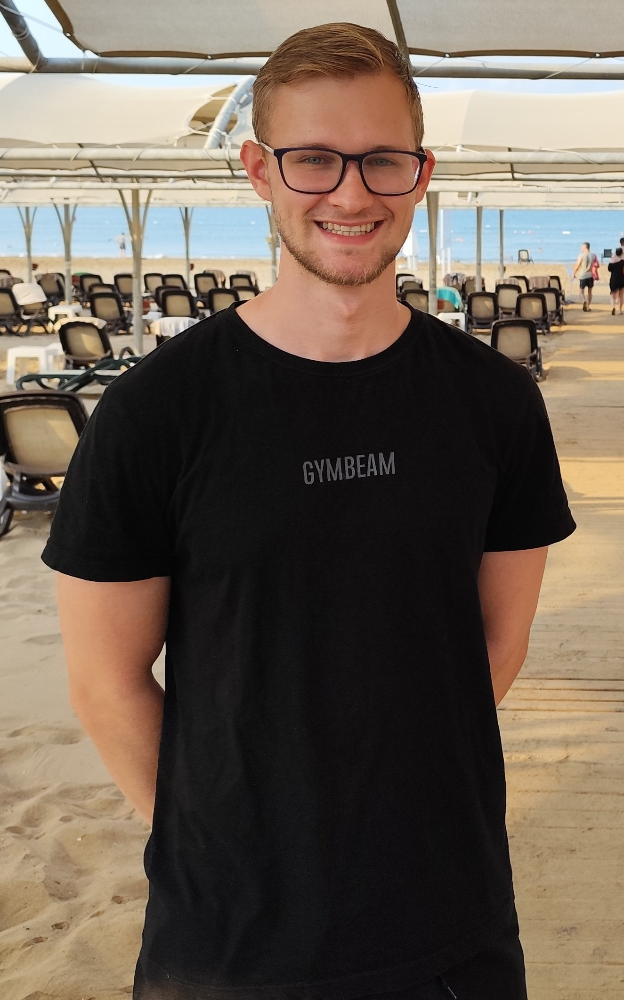

Volám sa Jozef Barčák mám 22 rokov a som študentom 3. ročníka aplikovanej informatiky na FEI STU v Bratislave. Pochádzam z Kysúc z malého mesta s názvom Turzovka.
Moje záujmy
Zaujímam sa najmä o šport a technológie. Šport je mojou vášňou od detstva, no počas rokov ma viaceré zranenia prinútili hľadať inú cestu, kde by som sa mohol rozvíjať a rásť. Tou cestou sa stalo programovanie.
Štúdium a skúsenosti
Na strednej škole som si vybral informatiku a matematiku ako maturitné predmety. Počas pandémie COVID som sa intenzívne venoval programovaniu v Pythone, pričom som často pomáhal spolužiakom s úlohami a projektmi. Vďaka tomu som si uvedomil, že programovanie je oblasť, v ktorej sa chcem rozvíjať.
Dnes študujem informatiku na STU a hoci bojujem s náročnými matematickými predmetmi, som presvedčený, že som sa rozhodol správne. Postupne sa učím aj ďalšie programovacie jazyky a chcem rozširovať svoje zručnosti v praxi.
Literatúra, ktorá ma posunula ďalej
- Can't Hurt Me - David Goggins
- 12 Rules for Life - Jordan B. Peterson
- Metóda Wima Hoffa - Wim Hof
- Sila zvyku - Charles Duhigg
Fun fact
Kvôli športu som si prešiel viacerými zraneniami vrátane roztrhnutého LCA, LCM a menisku. Dokonca som až po roku zistil, že nie všetky z nich boli reálne také vážne, ako vyzerali na MRI náleze. Dnes sa na to pozerám s nadhľadom a beriem to ako skúsenosť, ktorá ma posunula v živote ďalej. V tom ťažkom období, keď som musel prerušiť aktívny šport, ma najviac inšpiroval David Goggins. Bývalý Navy SEAL a ultramaratónec, ktorý sa dokázal vrátiť z najťažších životných situácií. Jeho prístup k prekonávaniu prekážok mi pomohol vrátiť sa späť k aktívnemu životu a nikdy sa nevzdať, nech sú okolnosti akokoľvek náročné.